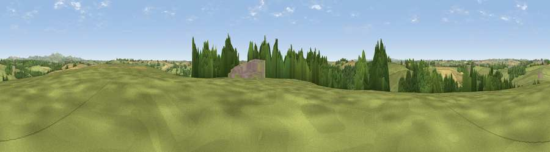

Viewpoint near Tregony
#30337 in England · top 54% of its area beats it · near TregonyWhere it is
The exact computed spot (SW 90425 45225). Click the marker for map links.
The view, rendered

A 360° render of this exact spot computed from the terrain model, tree cover and land cover — summer colours, afternoon light, calibrated against photographs of famous viewpoints. Real trees, hedges and buildings will differ in detail.
The panorama
Grey silhouette: terrain skyline in each direction (720 bearings, Earth curvature and refraction included). Dashed green: skyline with trees (+15 m) and buildings (+8 m) as obstacles. Blue strip: how far the ground is visible on each bearing.
Where the view opens
Wedge length = distance to the farthest visible ground on that bearing (vegetation-aware). Rings at 10, 25 and 50 km.
What fills the view
56% grassland · 22% cropland · 20% woodland · 2% built-up
Angular shares of the visible panorama (visual magnitude), not map area. Landscape diversity 0.46 (0–1 Shannon).
Key numbers
More beautiful places nearby
The staircase of upgrades: each row has a higher view potential than everything closer. Driving times are estimates from straight-line distance, calibrated against real road routing — check an actual route before setting out.
| Place | Direction | Drive | Score |
|---|---|---|---|
| Trebollack Hill | SW · 2 km | ~6 min | 47.0 |
| Viewpoint near Ruan Lanihorne | SW · 3 km | ~8 min | 51.0 |
| Viewpoint near Portloe | SE · 6 km | ~13 min | 68.5 |
| Viewpoint near Portloe | SSE · 7 km | ~14 min | 69.4 |
| Viewpoint near Portloe | ESE · 7 km | ~14 min | 74.4 |
| Viewpoint near Trethosa | N · 10 km | ~19 min | 78.5 |
| Viewpoint near Penhale | N · 10 km | ~20 min | 81.7 |
| Viewpoint near Foxhole | NE · 11 km | ~21 min | 84.3 |
50.26972, -4.94227 · source: screening · position refined by local search. Computed location — check access rights before visiting.